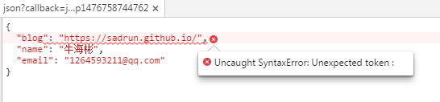
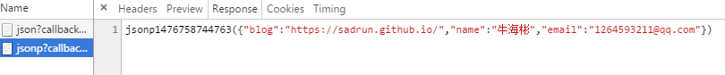

跨域不是你想跨，想跨就能跨
跨域一直是个老生常谈的问题，由于受同源策略限制，跨域确实是每个前端开发经常会遇到的一个问题。跨域的方式有很多种，但是 个人 认为目前普遍用得最多的还是JSONP.对于这种跨域方式，我想变态的人呢都已经深扒了其中的原理，骨头渣都可能研究了一番，并且谨慎的在用着。像我这种长得帅，习惯飘逸走位的人，当然是信手拈来，哪里想用就用哪里，相当滋润。
然而，出来混总是要还的。记得那时青春年少的我做一个功能时，由于我当初是刚来公司，只有一个测试服务器权限，带我的师傅说这个功能的代码就放在我有权限的这台服务器，可是服务端同学给我的接口是另一个服务器上部署的，于是聪明的我一想肯定是跨域了，就潇洒地抄了一段类似下面代码：
$.ajax({
url:"http://sadrun.duapp.com/test/json",
dataType: "jsonp",
jsonp: "callback",
success: function(response) {
console.log(response.name);
}
});
看这段代码没啥毛病，挺简约的，本以为数据没问题了，可以做余下的活了，结果跑起来让我看到了最不愿看到的事，

看到这唯美的画面，我立刻慌了，语法错了？哪里少了什么参数？返回的数据需要处理一下？各种猜想在我脑子里像幻灯片一样过着，尝试了各种都无果，几近奔溃（为什么不问同事呢：因为刚来此地，怕生，不敢）。之后就赶紧查资料，了解jsonp跨域。当然，上面的出的错误，搜了一下，很快得到了答案，那就是服务端没有提供相应的跨域处理，需要服务端童鞋处理下，很快，服务端童鞋给了一个新接口，类似下面：
$.ajax({
url:"http://sadrun.duapp.com/test/jsonp",
dataType: "jsonp",
jsonp: "callback",
success: function(response) {
console.log(response.name);
}
});
于是得到了下面这样结果，功能终于正常了。

本可以高高兴兴的和小伙伴开心的玩耍了，但是，做为一个有理想的小白，还是决心将之前问题搞得透彻一点。实际上在上面报错的时候，除了报喂捕获的错误之外，老版本浏览器会顺带给一句英文提示（我把浏览器版本升的太高，出不来，就不粘贴了），大致意思是说返回的数据被当做js解释的时候呢发现发现类型不对（原谅我大学应总是不及格），于是就报了那么一段错。看来还是要深扒一下JSONP原理才能安心，虽然特别不喜欢这样做，但是，你懂得。
什么是JSONP？
年轻的我起初以为jsonp是ajax，因为我总是看到上面那些$.ajax()代码，当然更年轻的时候我以为ajax只有jquery有，后来才明白压根不是那么回事。jsonp可以说和ajax没啥关系，只不过jquery为了方便，将它同ajax封装在了一个方法中，因此误导了一批又一批少不经事的小白。jsonp有的人说他是一种非正式的传输协议，也有的人说就是一个get请求，感觉都挺对，不过这样说，我感觉如果换做一年前的我，应该还是不理解。浏览器为了安全起见，规定不同源的客户端脚本在没明确授权的情况下，不能读写对方的资源，所以ajax方法没办法请求其他站点的数据（当然，xhr2例外），但是人们发现<script>标签是不受影响的，他可以执行来自不同服务器的代码，于是，服务端通过返回text/javascript类型的数据，使得返回的数据可以被浏览器解释执行。于是我们得到了它的真实面目：
var script=document.createElement("script");
script.type="text/javascript";
script.src="http://sadrun.duapp.com/test/jsonp?callback=jsonpCallback";
document.getElementsByTagName("head")[0].appendChild(script);
function jsonpCallback(data){//最终调用执行
console.log(JSON.stringify(data));
}
最终，服务端会返回jsonpCallback(data),和上面返回的数据格式一样，然后浏览器将其执行。到这里可能明白了，原来高大上的jsonp就是一个script资源请求。但是在用的时候发现上面的代码不够灵活，jquery提供的感觉灵活简洁多了，所以，我们就将其改造一下，稍微有点函数式编程的意思：
function jsonp(url,callback){
var script=document.createElement("script");
script.type="text/javascript";
random = parseInt(Math.random() * 1000000000000 + 1000000000000);
var funcN =['JSONPCallback', random].join('');
window[funcN] = function(data){
//产生一个全局变量，在数据请求成功时，会执行这个函数。
callback && callback(data);
}
script.src = url+"?callback="+funcN;
document.getElementsByTagName("head")[0].appendChild(script);
}
jsonp('http://sadrun.duapp.com/test/jsonp',function(data){
console.log(JSON.stringify(data));
})
上面的方法似乎已经可以满足大部分需求了，但是依然有一些弊端，例如，无法传递一些额外的参数，或者请求失败处理等。对于和我一样，拿来主义的人来说，上面的就属于歪瓜裂枣，根本不屑一顾。所以我们在对上面的代码进行深加工，再加工之后，就有了下面比较全面的jsonp：
function jsonp(options){ //jsonp
// 配置
var defaults = {
url: '', // 请求地址
params: {}, // 附加参数
jsonp: 'callback', // jsonp回调函数，?jsonp=jsonpCallback
jsonpCallback: '', // jsonp回调函数，如果此值为空，函数名将会随机生成，?jsonp=jsonpCallback
version: false, // 是否需要版本号
remove: true, // 加载完成后，是否删除script
success: null, // 加载完成
onerror: null, // 加载失败
error: 3 // 加载失败重试次数
};
// 内部函数
var extend = function() {
var args = Array.prototype.slice.apply(arguments), json = {};
if (args.length) {
json = args.shift();
for (var i = 0, len = args.length; i < len; i ++) for (var id in args[i]) json[id] = args[i][id];
}
return json;
};
var j2p = function(json) {
var a = [];
for (var i in json) a.push(i + '=' + json[i]);
return a.join('&');
};
// 合并配置
var options = extend({}, defaults, options);
// 加载失败函数回调执行
if (options.error <= 0) {
options.onerror && options.onerror.constructor == Function && options.onerror();
return false;
}
var head = document.getElementsByTagName('head')[0],
script = document.createElement('script'),
url = options.url,
random = parseInt(Math.random() * 1000000000000 + 1000000000000);
// jsonpCallback，若无传值，取随机值
options.jsonpCallback = options.jsonpCallback || ['JSONPCallback', random].join('');
options.params[options.jsonp] = options.jsonpCallback;
if (options.version) {
options.params['_'] = random;
}
window[options.jsonpCallback] = function() {
// success事件回调
options.success && options.success.constructor == Function && options.success.apply(options, arguments);
// 是否删除当前请求载体
options.remove && head.removeChild(script);
};
var params = j2p(options.params);
if (params) {
var urls = url.split('?'), s = '';
if (urls[1] === undefined) s = '?';
else if (urls[1] !== '') s = '&';
url = [url, s, params].join('');
}
script.src = url;
// 失败重试，次数 -1
script.onerror = function() {
options.error -= 1;
};
// script节点插入文档
head.appendChild(script);
}
jsonp({
url: 'http://sadrun.duapp.com/test/jsonp',
params: {},//其他参数，json格式的
success: function(data){
console.log(JSON.stringify(data));
}
//其他参数可根据需要自己配置
})
这篇关于jsonp的浅谈差不多就到这了。可能有的人会说，人家jquery，zepto等一些成熟的框架jsonp都已经做得那么好了，弄这个有啥用，确实没啥大用，但是在某些方面还是不错的，例如，你写一个功能简单，需求较少的页面时，本来整个页面可能就不到5k,结果，你需要一个跨域请求数据，这时候，其实不太建议用这些个框架，自己能写，就随手写几行代码，页面性能和加载速度都会有很大提高。好了，最后补几句，由于本人也是小白一枚，所说的都是自己的理解，和正确的解释讲解都会差那么一大截，还请见谅。如果说的有什么错误或者有什么技术上的想法可以留言。